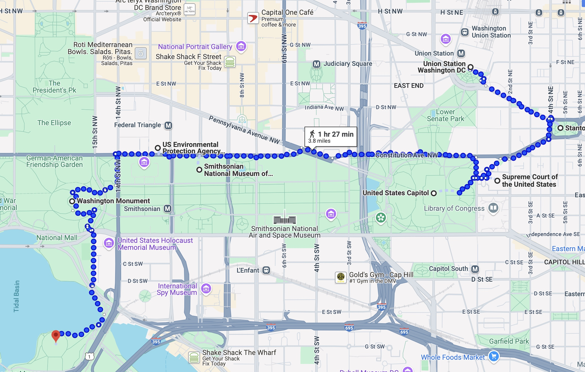

The Federal Express, an overnight train bound for Washington from Boston, was barreling southbound from Baltimore on Jan. 15, 1953, when its conductor discovered he had an issue with the air brakes. Two miles out from Union Station, he began signaling ahead that the train would be unable to stop. The station employee watching the tracks was able to send a warning to evacuate bystanders and the stationmaster’s office ahead of the runaway train. A later Baltimore Sun article detailed how the conductor ran through the train cars, yelling at passengers: “Get down on the floor! Lie down in your seat!” The train slammed into the building and plunged through the floor...accident injured more than 49 people, but “miraculously, no one was killed,” the Washington Post reported the next day.
“My mother grew up on Buffalo Avenue and Bergen Street in Brooklyn, and there was a soda shop there called Norma’s,” recalls Gina Chersevani. “They sold sodas, egg creams and floats.” This is the genesis story for Buffalo & Bergen
At the heart of each place is a vintage 1930s soda fountain (“We call it ‘the organ’—it’s got 16 pumps and two handles,” she says), which turns out sodas and cocktails using house-made syrups and flavors. But it’s not just sarsaparilla—Chersevani brings in ingredients such as beets, shiitake mushrooms and gentian root, and layers flavors together along with different styles of soda water to create drinks in a traditional manner, but that taste resolutely contemporary. “This allows me to have so much flexibility with my cocktails and sodas, because it’s being utilized in a number of ways—as a nonalcoholic drink, or if I want to tweak it into a tonic or an elixir, I can make it cocktail-focused without changing a thing,” she says.
Emily Jordan Folger (May 15, 1858 – February 21, 1936) was the co-founder of the Folger Shakespeare Library alongside her husband Henry Clay Folger. During her husband's lifetime, she assisted him in building the world's largest collection of Shakespeare materials. After his death in 1930, she funded the completion of the Folger Shakespeare Library to house the collection, remaining involved with its administration until her death in 1936. In 1932, she became the third woman to receive an honorary degree from Amherst College
Statue of Freedom is a classical female figure with long, flowing hair wearing a helmet with a crest composed of an eagle's head and feathers. She wears a classical dress secured with a brooch inscribed "U.S." Over it is draped a heavy, flowing, toga-like robe fringed with fur and decorative balls. Her right hand rests upon the hilt of a sheathed sword wrapped in a scarf; in her left hand she holds a laurel wreath of victory and the shield of the United States with 13 stripes.
The helmet is encircled by nine stars. Ten bronze points tipped with platinum are attached to her headdress, shoulders and shield for protection from lightning. She stands on a cast-iron pedestal topped with a globe encircled with the motto E Pluribus Unum (Out of many, one). The lower part of the pedestal is decorated with fasces (symbols of the authority of government) and wreaths. The pedestal is 18-1/2 feet high and almost doubles the total height. The crest of Freedom’s headdress rises 288 feet above the East Front Plaza.
Statue of Freedom does not wear or hold a knitted liberty cap, as would have been expected in nineteenth-century art. The knit cap provided to freed slaves in ancient Rome had been adopted as the symbol of liberty or freedom during the American and French Revolutions and was usually shown as red. The Statue of Freedom's crested helmet and sword, suggesting she is prepared to protect the nation, are more commonly associated with Minerva or Bellona, Roman goddesses of war. The history of the statue's design explains why she wears a helmet rather than a liberty cap. The story of her casting reveals that some of the people who worked to create Freedom were not themselves free.